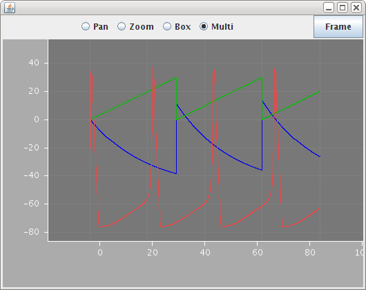

Example 1: Dimensions, Units, ComponentTypes and Components
This page is structured as a walk-through of a single example file example1.xml explaining the various elements as they occur.
The whole model is wrapped in a block which, for now, is called "Lems" (Low Entropy Model Specification). Then we define the dimensions that will be used in this model. Typically these would be loaded from an external file along with various other stuff, not repeated in each model, but it is included here in the interests of having a single file for everything.
Each dimension element just associates a dimension name with the exponents for mass, length, time and current.
At this stage, one can begin defining component types. This is done with the ComponentType element and child Parameter elements. A simple cell model with three parameters could be defined as:
<Parameter name="threshold" dimension="voltage" />
<Parameter name="refractoryPeriod" dimension="time" />
<Parameter name="capacitance" dimension="capacitance" />
</ComponentType>
Each of the Parameter elements defines a parameter that should be supplied when a component is defined based on this type. Before we can define a component though, we need some units to use in setting those values.
Defining a unit involves supplying the symbol, dimension and the power of ten by which it is scaled from the IS base unit. Note that units have a symbol, not a name. This is because they occur as a component of an assignment expression such as 'threshold="-45mV"' not as a reference such as 'dimension="voltage"'. In general, where one component refers to another, then the attribute value is the name of the thing being referred to, and the attribute name is the lower case version of the type of the thing being referred to. Thus when a dimension is declared with <Dimension name="voltage".../> then it is referred to from a Parameter as <Parameter dimension="voltage"/>. This holds for all references to components of a particular type.
Returning to the units, this model will use the following, which normally would also be loaded from an external file of standard settings.
Once the units are available it is possible to define a component. There are two equivalent ways of doing this: either by using the Component element and setting its type, or by using the type as a new XML element. The latter may be a little more readable, but for a simple component like this it doesn't make much difference. For more complicated components with nested children though, the second form is definitely clearer (eg see the HHChannel examples later).
<Component id="ctb" type="cell1" threshold="-30 mV" refractoryPeriod="2 ms" capacitance="1uF" />
In specifying a component, a value must be supplied for each of the parameters defined in the corresponding type. The value is composed of a number and a unit. It can't include expressions with multiple units for the values so, for example, to express an acceleration you couldn't write "3 m s^-2". Instead would need to define a unit element for the compound unit (and a dimension element for acceleration) and use that.
Specifying all the parameters for each component can lead to duplication. Suppose, for example, you want to build a range of cell models all based on cell1, but you don't want to change the threshold. You could define a new type without the threshold, but it is neater to still use the same type but specify that you are restricting attention to the set that all have a particular value for the threshold. This can be done by creating a new type that extends the cell1 type and includes a Fixed element to fix the threshold:
<Fixed parameter="threshold" value="-45mV" />
</ComponentType>
The cell2 type can now be used by only setting the remaining two parameters.
As well as restricting types when you extend them, you can also add new parameters as shown in the next type. This also introduces an EventPort, to indicate that instances of components built from this type can receive events, and, finally, a Dynamics block. This is where the Dynamics of instances of the component can be specified. The phrase "instances of the component" is intentional. The type itself doesn't "behave": it is just a definition. A component built from the type doesn't "behave" either: it is just a set of parameter values linked back to the type. The thing that "behaves" is an instance in a runnable model that actually contains state variables. In general, many components may be based on one type, and one component may give rise to many instances in a running model.
Here is a basic capacitative cell with a leaking potential and a simple event handler.
<Parameter name="leakConductance" dimension="conductance" />
<Parameter name="leakReversal" dimension="voltage" />
<Parameter name="deltaV" dimension="voltage" />
<EventPort name="spikes-in" direction="in" />
<Exposure name="v" dimension="voltage" />
<Dynamics>
<StateVariable name="v" exposure="v" dimension="voltage" />
<TimeDerivative variable="v" value="leakConductance * (leakReversal - v) / capacitance" />
<OnEvent port="spikes-in">
<StateAssignment variable="v" value="v + deltaV" />
</OnEvent>
</Dynamics>
</ComponentType>
The Dynamics involves a single state variable, a voltage called "v", and one equation, expressing how v drifts towards the leak reversal potential. The event block specifies what happens when an instance receives an event. In this case the state variable v is bumped up by deltaV. The value attribute in the TimeDerivative element is an expression involving the parameters and the state variables. It gives the right hand side of a first order differential equation dv/dt = (...). Expressions follow normal operator precedence rules with "^" for general powers and exp(x) for exponentials.
Below is another example of a Dynamics, this time with an output port and a condition testing block that sends an event when the condition becomes true. The test attribute in the OnCondition element is a boolean valued expression. These use Fortran style operators (.gt. and .lt. for > and <) to avoid confusion with xml angle brackets.
<Parameter name="period" dimension="time" />
<EventPort name="a" direction="out" />
<Exposure name="tsince" dimension="time" />
<Dynamics>
<StateVariable name="tsince" exposure="tsince" dimension="time" />
<TimeDerivative variable="tsince" value="1" />
<OnCondition test="tsince .gt. period">
<StateAssignment variable="tsince" value="0" />
<EventOut port="a" />
</OnCondition>
</Dynamics>
</ComponentType>
The above model is one way of writing a regular event generator. It has a state variable that grows in sync with t until it reaches a threshold when the event fires and it is reset. The model below achieves the same effect without solving a differential equation. Instead, it asks for access to the global time variable ("t" is the one global variable that is always available) and uses that in the test condition. [aside - there's a slight problem here since t exists even if the model doesn't define a dimension called time].
<Dynamics>
<GlobalVariable name="t" dimension="time" />
<StateVariable name="tlast" dimension="time" />
<DerivedVariable name="tsince" exposure="tsince" value="t - tlast" />
<OnCondition test="t - tlast .gt. period">
<StateAssignment variable="tlast" value="t" />
<EventOut port="a" />
</OnCondition>
</Dynamics>
</ComponentType>
The examples so far have all been of very simple components which just had a single set of parameters. Real models however require rather more structure than this with components having children of various types and possibly multiple children of certain types. To illustrate this, the next example shows how the concept of an ion channel using Hodgkin-Huxley Dynamics can be defined.
Starting from the bottom, we define the different types of rate equations that occur. These will supply terms in the equations for the derivatives of the gating particles. There are three different expressions used in the HH equations, but they can all be expressed with three parameters, rate, midpoint and scale. We first define a general rate class, and then extend it for the three cases.
The HHRate Dynamics shows two new constructs. An Exposure declares that the component makes a quantity available to other components. A Requirement specifies that the component needs to know about a variable that it doesn't define itself. When it is used in a model, the specified variable must be available (and have the right dimension) in the parent component or one of its more remote ancestors.
Note that the general HHRate class defines an Exposure without a Dynamics block to actually set its value. This is analogous to an abstract class in java: you can't actually make a component out of the HHRate element directly (the interpreter will complain) but any component using a HHRate will know it has an exposed variable called "r". The types that extend HHRate have to supply a value for "r" before they are fully defined and ready to be used.
So here is the basic HHRate and its three extensions:
<Parameter name="rate" dimension="per_time" />
<Parameter name="midpoint" dimension="voltage" />
<Parameter name="scale" dimension="voltage" />
<Exposure name="r" dimension="per_time" />
</ComponentType>
<Dynamics>
<DerivedVariable name="r" exposure="r" value="rate * exp((v - midpoint)/scale)" />
</Dynamics>
</ComponentType>
<Dynamics>
<DerivedVariable name="r" exposure="r" value="rate / (1 + exp(0 - (v - midpoint)/scale))" />
</Dynamics>
</ComponentType>
<Dynamics>
<DerivedVariable name="x" value="(v - midpoint) / scale" />
<DerivedVariable name="r" exposure="r" value="rate * x / (1 - exp(0 - x))" />
</Dynamics>
</ComponentType>
Now the rate elements are available, they can be used to define a component for a gate in a HH model. This introduces the Child element which says that components built using this type must include a subcomponent of the specified type. A HH gate needs subcomponents for the forward and reverse rates.
<Parameter name="power" dimension="none" />
<Child name="Forward" type="HHRate" />
<Child name="Reverse" type="HHRate" />
<Exposure name="fcond" dimension="none" />
<Requirement name="v" dimension="voltage" />
<Dynamics>
<StateVariable name="q" dimension="none" />
<DerivedVariable name="rf" select="Forward/r" />
<DerivedVariable name="rr" select="Reverse/r" />
<TimeDerivative variable="q" value="rf * (1 - q) - rr * q" />
<DerivedVariable name="fcond" exposure="fcond" value="q^power" />
</Dynamics>
</ComponentType>
The above is a perfectly reasonable way to define a HH gate but unfortunately it needs smarter numerics than the simple forward Euler rule used in the proof of concept interpreter. Running this model with the Euler method leads to numerical instabilities. Happily, this problem can be circumvented without improving the numerics by changing the state variable. Instead of q which is defined on [0, 1] you can use x defined on (-infinity, infinity) which works much better with a naive integration scheme. This is what it looks like with x instead of q:
<Parameter name="power" dimension="none" />
<Child name="Forward" type="HHRate" />
<Child name="Reverse" type="HHRate" />
<Exposure name="fcond" dimension="none" />
<Requirement name="v" dimension="voltage" />
<Dynamics>
<StateVariable name="x" dimension="none" />
<DerivedVariable name="ex" dimension="none" value="exp(x)" />
<DerivedVariable name="q" dimension="none" value="ex / (1 + ex)" />
<DerivedVariable name="rf" select="Forward/r" />
<DerivedVariable name="rr" select="Reverse/r" />
<TimeDerivative variable="x" value="(1 + ex)^2 / ex * (rf * (1 - q) - rr * q)" />
<DerivedVariable name="fcond" exposure="fcond" value="q^power" />
</Dynamics>
</ComponentType>
Now the gate type has been defined, it can be used to say what a HH Channel actually is. In this picture, a channel just has a conductance and one or more gates:
<Parameter name="conductance" dimension="conductance" />
<Children name="gates" type="HHGate" min="0" max="4" />
<Requirement name="v" dimension="voltage" />
<Exposure name="g" dimension="conductance" />
<Dynamics>
<DerivedVariable name="gatefeff" select="gates[*]/fcond" reduce="multiply" />
<DerivedVariable name="g" exposure="g" value="conductance * gatefeff" />
</Dynamics>
</ComponentType>
This introduces one new construct, the Children element, that allows for an indeterminate number of children of a given type. This means that the same type can be used for potassium channels with only one gate, sodium channels with two gates or indeed other channels with more gates. The first derived variable in the Dynamics block uses a xpath-style selection function to process the indeterminate number of children. In this case it computes the produce of the fcond variables from the different gates.
With these definitions in place, it is now possible to define some channel models. The classic Hodgkin-Huxley sodium channel can be represented as:
<HHChannel id="na" conductance="20pS">
<HHGate id="m" power="3">
<Forward type="HHExpLinearRate" rate="1.per_ms" midpoint="-40mV" scale="10mV" />
<Reverse type="HHExpRate" rate="4per_ms" midpoint="-65mV" scale="-18mV" />
</HHGate>
<HHGate id="h" power="1">
<Forward type="HHExpRate" rate="0.07per_ms" midpoint="-65.mV" scale="-20.mV" />
<Reverse type="HHSigmoidRate" rate="1per_ms" midpoint="-35mV" scale="10mV" />
</HHGate>
</HHChannel>
The potassium channel uses exactly the same types, but has only one gate:
<HHChannel id="k" conductance="20pS">
<HHGate id="n" power="4">
<Forward type="HHExpLinearRate" rate="0.1per_ms" midpoint="-55mV" scale="10mV" />
<Reverse type="HHExpRate" rate="0.125per_ms" midpoint="-65mV" scale="-80mV" />
</HHGate>
</HHChannel>
These channel models are an example where the ability to use the type name as the XML tag makes the model much clearer: the alternative just with three levels of Component elements would look rather unhelpful.
Although the channel models have now been defined, they still need to be used in a cell before anything can be run. For this we'll just define a basic channel population type. There is one new construct here: the ComponentRef element which in this case says that a channel population needs a reference to a component of type HHChannel. This is much like a Child element, but instead of the component being defined then and there inside the channel population, there is just a reference to it.
The Dynamics block for a cannel population just computes the total conductance and then the current, in this case using Ohm's law.
<ComponentRef name="channel" type="HHChannel" />
<Parameter name="number" dimension="none" />
<Parameter name="erev" dimension="voltage" />
<Requirement name="v" dimension="voltage" />
<Exposure name="current" dimension="current" />
<Dynamics>
<DerivedVariable name="channelg" select="channel/g" />
<DerivedVariable name="geff" value="channelg * number" />
<DerivedVariable name="current" exposure="current" value="geff * (erev - v)" />
</Dynamics>
</ComponentType>
To use these populations, they need inserting in a cell. The following type represents a simple cell with a number of populations and an option to inject a current so it does something interesting.
<Parameter name="capacitance" dimension="capacitance" />
<Children name="populations" type="ChannelPopulation" />
<Parameter name="injection" dimension="current" />
<Parameter name="v0" dimension="voltage" />
<Exposure name="v" dimension="voltage" />
<Dynamics>
<OnStart>
<StateAssignment variable="v" value="v0" />
</OnStart>
<DerivedVariable name="totcurrent" select="populations[*]/current" reduce="add" />
<StateVariable name="v" dimension="voltage" />
<TimeDerivative variable="v" value="(totcurrent + injection) / capacitance" />
</Dynamics>
</ComponentType>
This Dynamics block introduces the OnStart element which is much like the OnEvent elements earlier, except the block applies only when the simulation starts. In this case it just sets the voltage to a value supplied as a parameter. The Dynamics block uses another selector function "sum(..." to sum the currents delivered by the various populations.
Now all the definitions are in place to define a cell model with a couple of channel populations:
<HHCell id="hhcell_1" capacitance="1pF" injection="4pA" v0="-60mV">
<ChannelPopulation channel="na" number="6000" erev="50mV" />
<ChannelPopulation channel="k" number="1800" erev="-77mV" />
</HHCell>
To go with this cell type, we can define some components using the other types defined earlier. Note how celltype_d is based on an existing component via the "extends" attribute and only replaces one parameter value.
<Component id="celltype_c" type="iaf3" leakConductance="3 pS" refractoryPeriod="3 ms" threshold="45 mV" leakReversal="-50 mV" deltaV="5mV" capacitance="1uF" />
<Component id="celltype_d" extends="celltype_c" leakConductance="5 pS" />
<Component id="gen1" type="spikeGenerator" period="30ms" />
<Component id="gen2" type="spikeGenerator2" period="32ms" />
<Component id="cell3cpt" type="cell3" leakReversal="-50mV" deltaV="50mV" threshold="-30mV" leakConductance="50pS" refractoryPeriod="4ms" capacitance="1pF" />
Finally a simulation element says what component is to be run and for how long. It also contains an embedded display element so the results of the simulation can be visualized. These are also user-defined types: their definitions will be presented in example 6.
<Simulation length="80ms" step="0.05ms" target="hhcell_1">
<Display unit="ms">
<Line quantity="v" unit="mV" color="#0000f0" />
</Display>
</Simulation>
That's it. When this model is run it produces the figure shown below (after rescaling a bit).
The next example shows a few more constructs that are needed for defining synapse models.